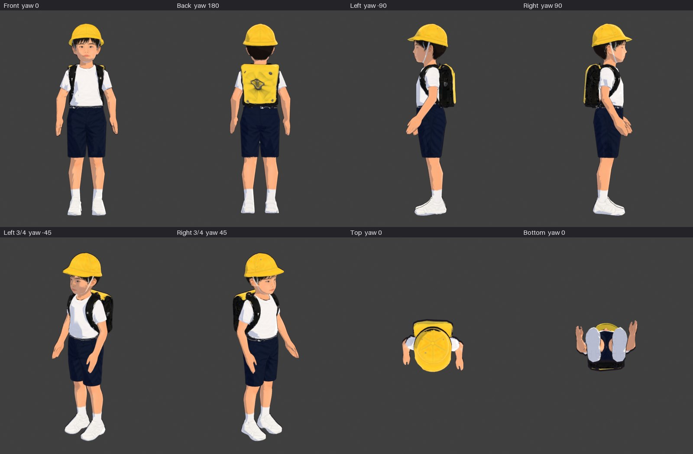
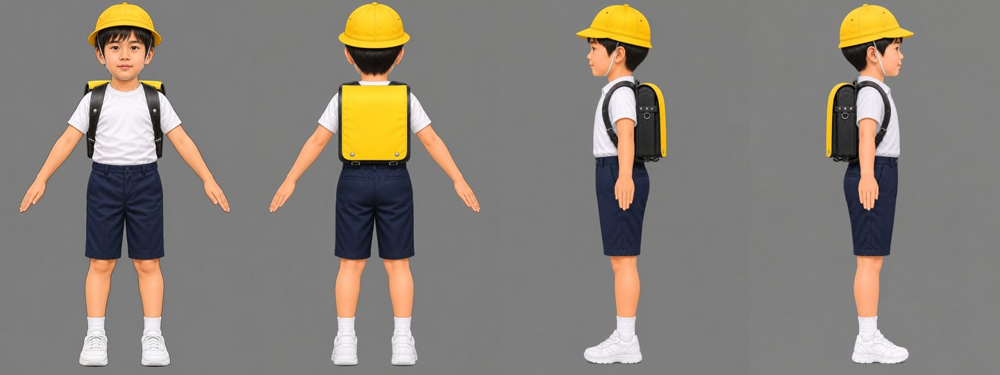
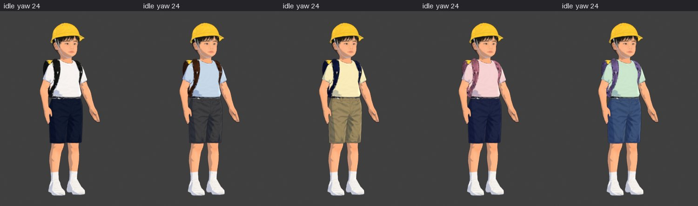
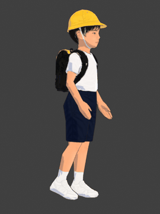
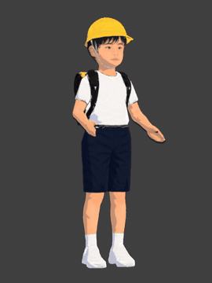
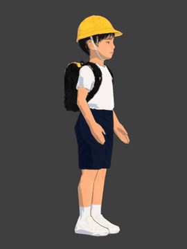

FirstGraderBoy
KM-C01 · KM-C01 · 0.38 × 0.30 × 1.17 m · 13428 triangles





1234567891011121314151617
The 17 checks: 3 known limit, 12 passed, 2 n/a
| 1 | Every part once | pass | one skin: one head, one cap, one randoseru, two arms and legs; looked at in all eight views, Top and Bottom too |
| 2 | Closed shell | limit | 29 edges with one face, Meshy's own (along the randoseru's straps, the cap's edge and the waist, by the bones they ride on); no hole shows in any of the eight views or the motions |
| 3 | Depth from each part's own width | pass | a model meshy.ai built from its four views (front, back, left, right), in the round |
| 4 | Views the game sees | pass | every side made from a picture of that side; the game sees them from the side as they walk, and the back as they walk away |
| 5 | Size, triangles | pass | 1.17 m tall (a six-year-old), 13,428 triangles (a passer-by's budget: 14,000), a 2048 atlas |
| 6 | Outline whole | pass | no background in its texture; the outline as built (looked at in the eight views) |
| 7 | No holes | pass | none seen in the eight views or any motion frame (looked at every second frame at full size) |
| 8 | Own models before walls | n/a | a character, not a cut-out |
| 9 | Look target | pass | Mia's realism, a Japanese six-year-old's face (the prompts' rules, C24, C25): no anime look |
| 10 | Solid | pass | solid and whole |
| 11 | No brands | pass | no logo or brand on the clothes, cap or randoseru |
| 12 | No wires or sky | n/a | a character |
| 13 | Repairs listed | limit | the hems held in the polish (where two outfit parts meet; cut freely they left dark flaps over the knees, C28). From meshy.ai's own texture, not repaired: a buckle in the middle of the randoseru's yellow cover with painted folds round it (his back view has two rivets and no buckle) |
| 14 | Rig names | pass | Meshy's rig (Spine02, Spine01, Spine, neck, head_end: C26) merged into the game's 17 bones, with the Bag and Nose markers; posed by CharacterRig in every motion |
| 15 | Joints overlap | pass | one skin bound to the bones: no seam at the hips, knees, shoulders or neck in any frame of the stroll |
| 16 | Feet planted | limit | never below the ground; the lowest point rises 0.9 to 2.9 % of its height through the stride: the game's stroll swings the legs from the hip, as every passer-by's, and CharacterRig only lifts |
| 17 | Each part only itself | pass | the outfit parts drawn recoloured (the palette): the shirt, the legwear and the randoseru each their own, the cap, socks and shoes left as they are |